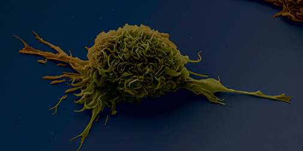
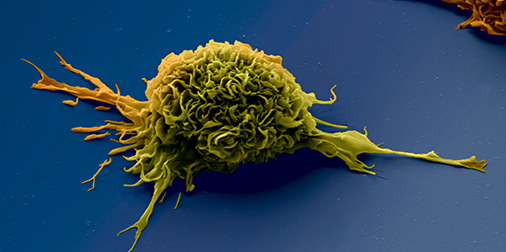

Une maladie auto-immune se caractérise par la présence d’auto-anticorps qui génèrent la destruction de nos propres cellules. L’équipe de Pierre Bruhns teste actuellement un cocktail d’anticorps thérapeutiques capable de bloquer les récepteurs aux anticorps responsables de maladies telles que la polyarthrite rhumatoïde ou le lupus erythémateux systémique.